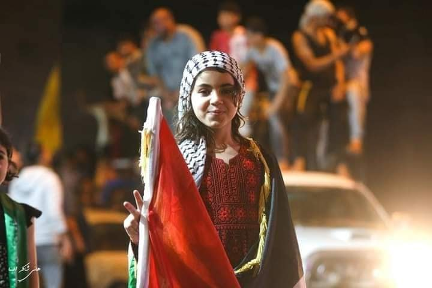
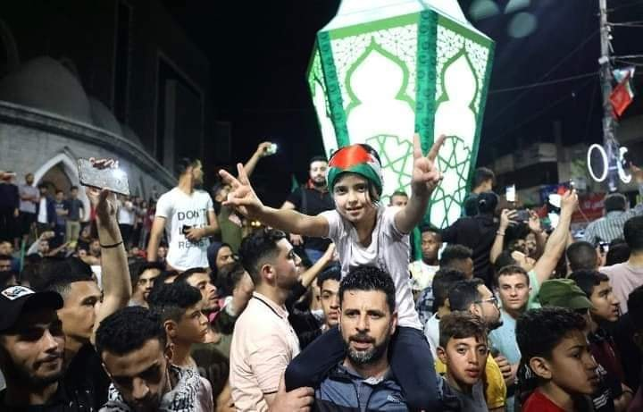
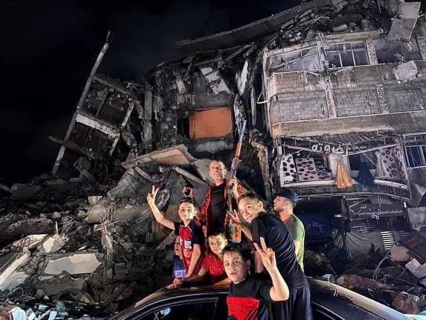
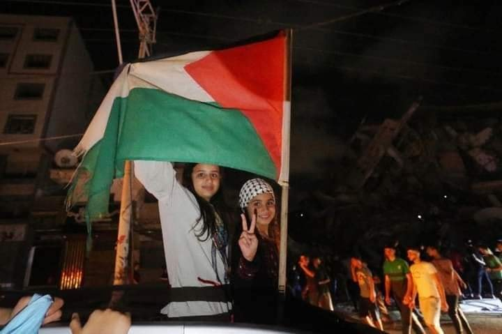

যুদ্ধবিরতিতে গাযাবাসীর আনন্দ দেখে চোখে পানি এসে গেল। তাঁদের আনন্দে আমরাও আনন্দিত।…
২১ মে, ২০২১
যুদ্ধবিরতিতে গাযাবাসীর আনন্দ দেখে চোখে পানি এসে গেল। তাঁদের আনন্দে আমরাও আনন্দিত। তবে এ তো সাময়িক সুখ। প্রকৃত সুখ আর বিজয় তো সে দিন অর্জন হবে, যেদিন ইহুদিরা বাধ্য হয়ে মুসলিমদের কাছে আত্মসমর্পণ করবে। মুক্ত হবে প্রাণের মসজিদে আকসা। প্রতিষ্ঠিত হবে খেলাফাহ আলা মিনহাজিন নুবুয়্যাহ। জীবন বাঁচিয়ে রাখার জন্য করজোড়ে টেক্স দিবে সব কাফের সম্প্রদায়। যেমনটা মহান আল্লাহ'র ফরমান-
قٰتِلُوا الَّذِينَ لَا يُؤْمِنُونَ بِاللَّهِ وَلَا بِالْيَوْمِ الْآخِرِ وَلَا يُحَرِّمُونَ مَا حَرَّمَ اللَّهُ وَرَسُولُهُۥ وَلَا يَدِينُونَ دِينَ الْحَقِّ مِنَ الَّذِينَ أُوتُوا الْكِتٰبَ حَتّٰى يُعْطُوا الْجِزْيَةَ عَن يَدٍ وَهُمْ صٰغِرُونَ.
তোমরা লড়াই কর আহলে কিতাবের সে সব লোকের সাথে যারা আল্লাহ ও শেষ দিবসে ঈমান রাখে না এবং আল্লাহ ও তাঁর রাসূল যা হারাম করেছেন তা হারাম মনে করে না, আর সত্য দীন গ্রহণ করে না, যতক্ষণ না তারা স্বহস্তে নত হয়ে জিযিয়া-কর দেয়। [সূরা তাওবাহ- আয়াত- ২৯]



